Wooseok Jang
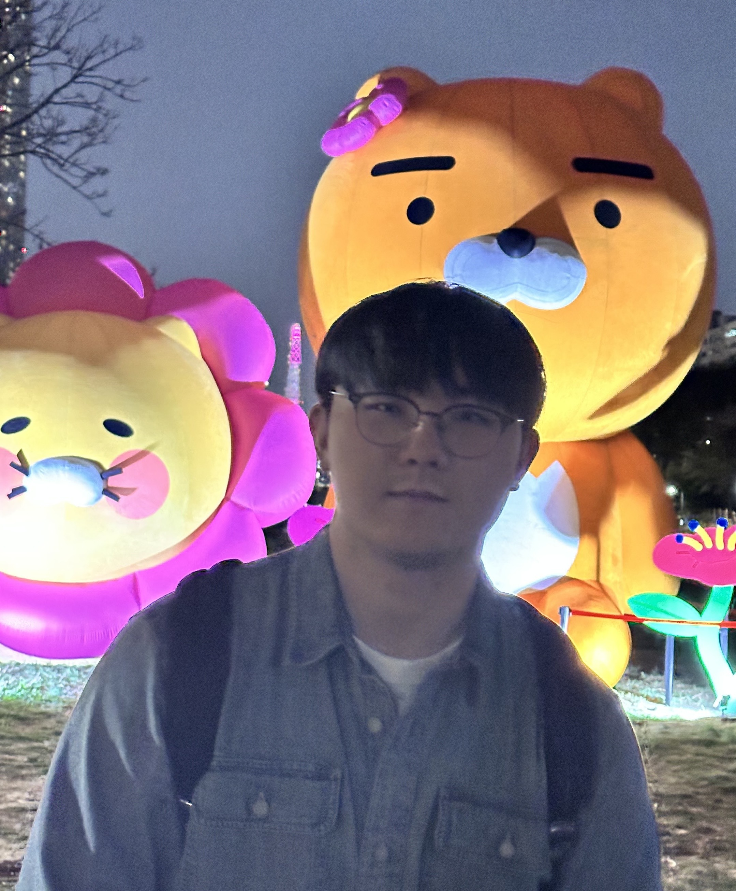
Ph.D. Student @ CVLAB, KAIST
I am a Ph.D. student at KAIST, advised by Prof. Seungryong Kim. I received my B.S. and M.S. from Korea University. My research focuses on controllable generative AI. My past work has centered on diffusion guidance for image generation and geometry-aware 3D generation. More recently, I have been focusing on video generation, particularly geometry-aware and long-form generation, to better capture the real world.
Publications
2026
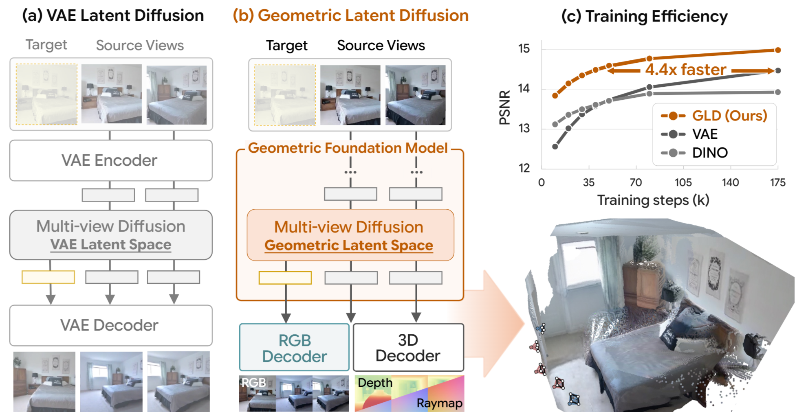
Wooseok Jang, Seonghu Jeon, Jisang Han, Jinhyeok Choi, Minkyung Kwon, Seungryong Kim, Saining Xie, and Sainan Liu
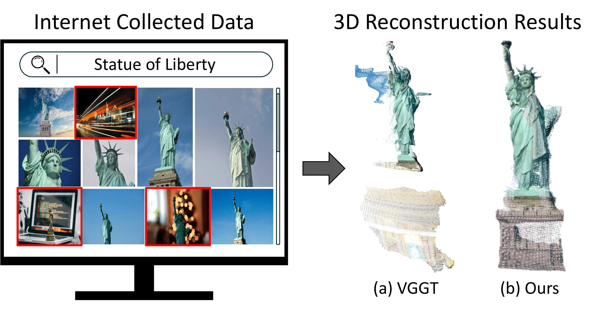
Jisang Han*, Sunghwan Hong*, Jaewoo Jung, Wooseok Jang, Honggyu An, Qianqian Wang, Seungryong Kim, and Chen Feng
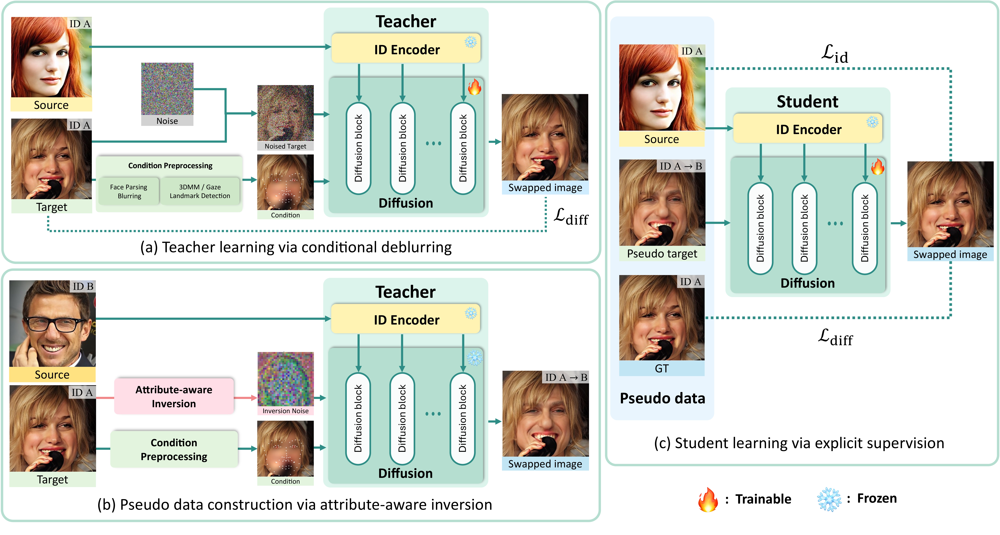
Jiwon Kang, Yeji Choi, JoungBin Lee, Wooseok Jang, Jinhyeok Choi, Taekeun Kang, Yongjae Park, Myungin Kim, and Seungryong Kim
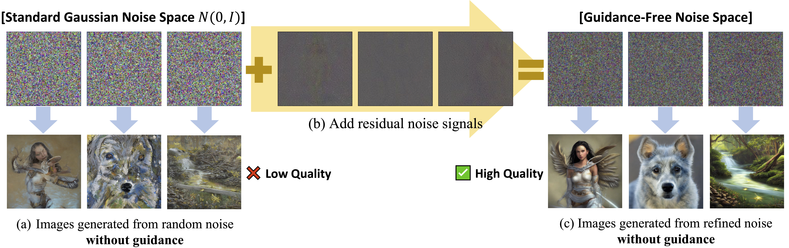
Donghoon Ahn*, Jiwon Kang*, Sanghyun Lee, Jaewon Min, Minjae Kim, Wooseok Jang, Hyoungwon Cho, Sayak Paul, SeonHwa Kim, Eunju Cha, Kyong Hwan Jin, and Seungryong Kim
2025
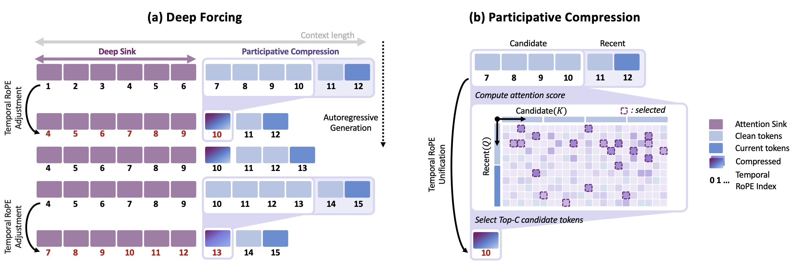
Jung Yi, Wooseok Jang, Paul Hyunbin Cho, Jisu Nam, Heeji Yoon, and Seungryong Kim
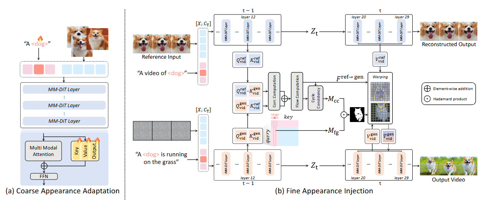
Hyunkoo Lee, Wooseok Jang, Jini Yang, Taehwan Kim, Sangoh Kim, Sangwon Jung, and Seungryong Kim
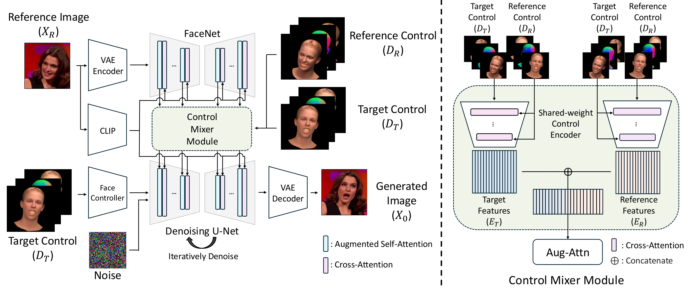
Wooseok Jang, Youngjun Hong, Geonho Cha, and Seungryong Kim
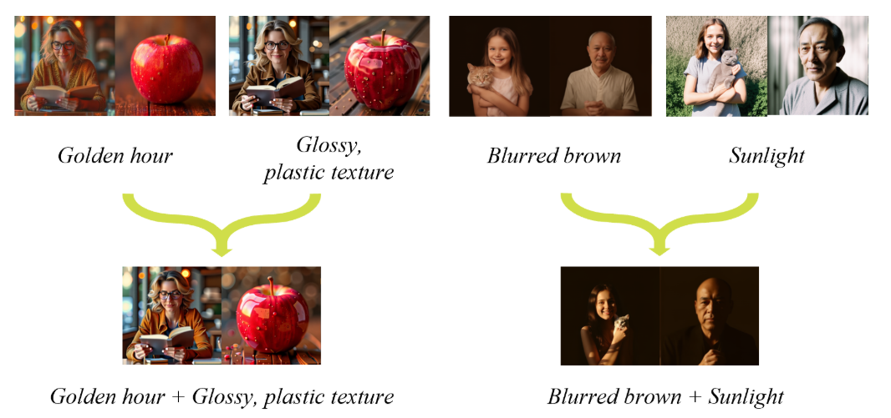
Donghoon Ahn*, Jiwon Kang*, Sanghyun Lee, Minjae Kim, Jaewon Min, Wooseok Jang, Sangwu Lee, Sayak Paul, Susung Hong, and Seungryong Kim
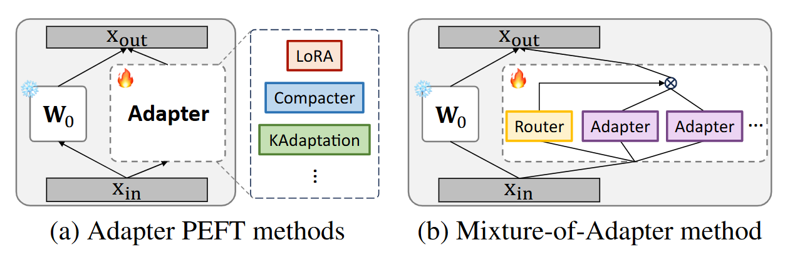
Gyuseong Lee*, Wooseok Jang*, Jin Hyeon Kim, Jaewoo Jung, and Seungryong Kim
WACV 2025 paper
2024
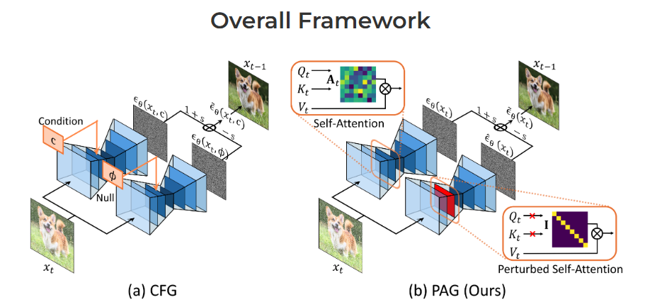
Donghoon Ahn*, Hyoungwon Cho*, Jaewon Min, Wooseok Jang, Jungwoo Kim, SeonHwa Kim, Hyun Hee Park, Kyong Hwan Jin, and Seungryong Kim
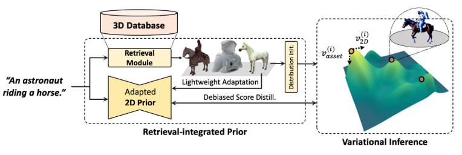
Junyoung Seo*, Susung Hong*, Wooseok Jang*, Hyeonsu Kim, Minseop Kwak, Doyup Lee, and Seungryong Kim
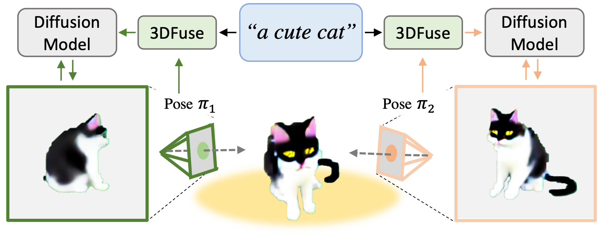
Junyoung Seo*, Wooseok Jang*, Min-Seop Kwak*, Jaehoon Ko, Hyeonsu Kim, Junho Kim, Jin-Hwa Kim, Jiyoung Lee, and Seungryong Kim
2023
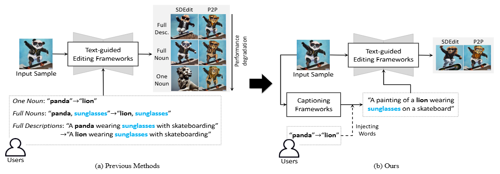
User-friendly Image Editing with Minimal Text Input: Leveraging Captioning and Injection Techniques
Sunwoo Kim, Wooseok Jang, Hyunsu Kim, Junho Kim, Yunjey Choi, Seungryong Kim, and Gayeong Lee
arXiv 2023 paper
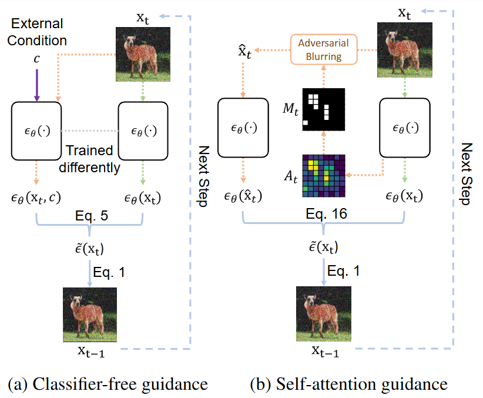
Susung Hong, Gyuseong Lee, Wooseok Jang, and Seungryong Kim
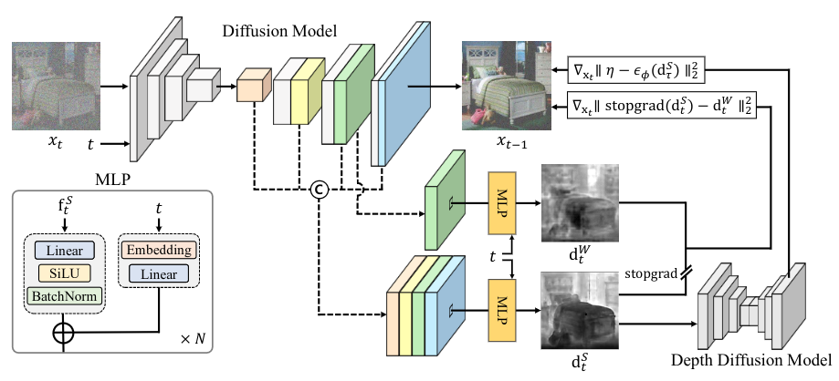
Depth-Aware Guidance with Self-Estimated Depth Representations of Diffusion Models
Gyeongnyeon Kim*, Wooseok Jang*, Gyuseong Lee*, Susung Hong, Junyoung Seo, and Seungryong Kim
Pattern Recognition paper
Experience
Mar 2026 —
Sep 2026
Sep 2026
Microsoft Research Asia
Research Intern
May — Aug
2025
2025
New York University
Visiting Scholar
Dec 2023 —
May 2024
May 2024
Naver Cloud
Research Intern
Education
Mar 2025 —
KAIST
Ph.D. in Artificial Intelligence
Advisor: Prof. Seungryong Kim
Sep 2022 —
Feb 2025
Feb 2025
Korea University
M.S. in Computer Science and Engineering
Mar 2017 —
Aug 2022
Aug 2022
Korea University
B.S. in Computer Science